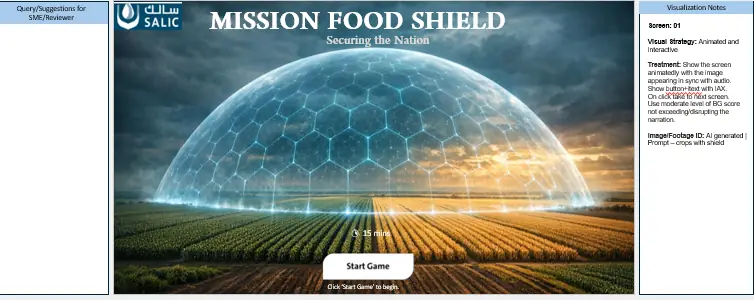
Experiential learning
Gamification & Real-World Learning
Learning design using real-world contexts, motivation and interaction to make concepts more engaging and memorable.
We work with organisations to turn business needs, subject-matter expertise and complex information into practical learning experiences, performance support and structured learning solutions.
LearningStudio42 consulting capabilities
Our work spans learning strategy, instructional architecture, curriculum design, storyboarding, digital and immersive learning, AI-enabled design, facilitation, assessments and performance support — with the flexibility to choose the right format for the learning need.
We bring a business-facing perspective to learning projects — connecting the learning need to the audience, the workflow and the desired performance rather than treating content development as an isolated activity.
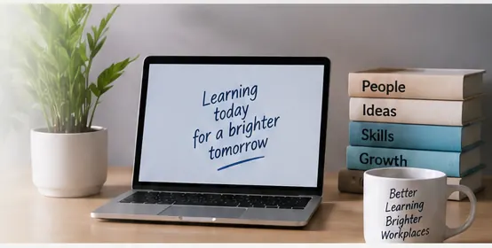
Corporate onboarding demonstrator
See how we would approach a multi-department onboarding challenge before jumping into course development. Select a learner population and explore a small part of the possible learning architecture.
Hold Ctrl/Cmd to select more than one.
A curated view of different learning-design capabilities

Learning design using real-world contexts, motivation and interaction to make concepts more engaging and memorable.
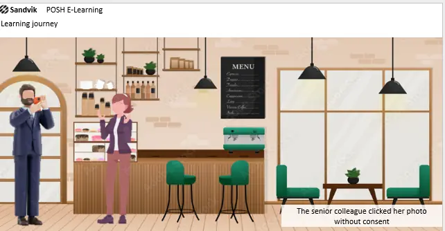
Scenario-led learning designed to move learners from passive information consumption toward decisions and application.
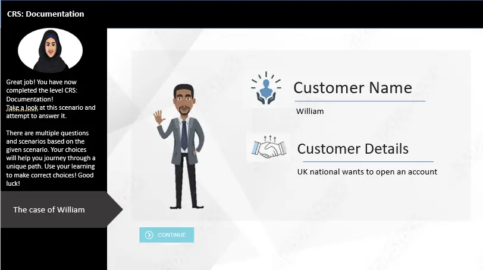
Interactive paths that allow learners to explore choices, consequences and alternative responses.
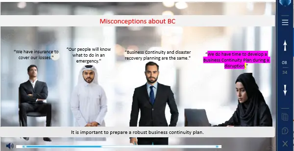
Visual and character-led treatment for compliance topics, supporting contextualised learning and learner attention.
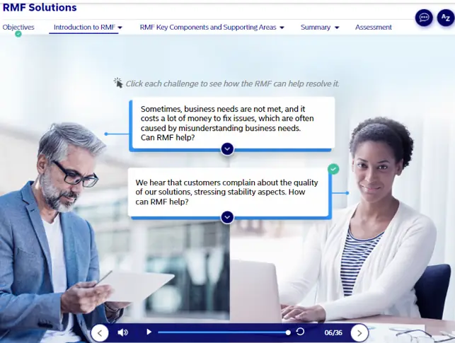
Interface-led learning treatment for technical subject matter and structured knowledge transfer.
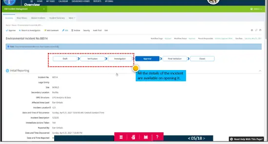
Learning support designed to help users understand systems, workflows and task-related information.
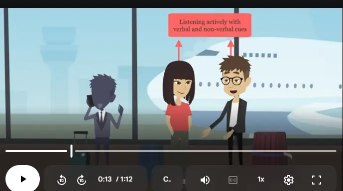
Visual learning assets for induction and onboarding contexts, supporting orientation and early-stage performance.
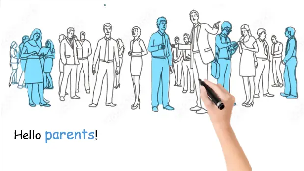
Learning-media examples created for academic and structured learning contexts.
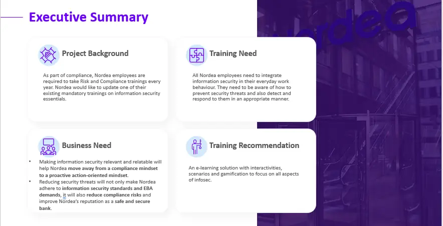
Client-facing solution planning covering learning architecture, scope, delivery approach and project assumptions.
University learning sample
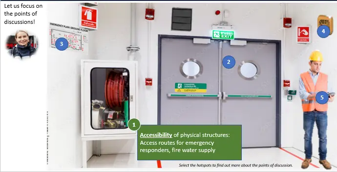
A university curriculum sample for Digital Banking demonstrates structured syllabus development, an explicit aim, learning objectives, content architecture and supporting learning activities.
The sample includes topics such as digital banking, UPI, BBPS, mobile money, payment aggregators and the impact of demonetisation on digitisation.
Open curriculum sample ↗Consulting → design → delivery
Clarify the business need, audience, context and performance gap.
Translate information into objectives, learning architecture and a coherent experience.
Select the right mix of instruction, scenarios, practice, assessment and media.
Support delivery through digital learning, facilitation, job aids or process documentation.
Use stakeholder feedback, testing and learning evidence to improve the solution.
Live portfolio case
A live demonstration of structured SOP development, process mapping, swimlane visualisation, reference coding, document control and a connected knowledge library.
The work is designed to show how complex operational knowledge can be converted into documentation that helps people know what happens next, who does it and what controls apply.
Open live SOP Library ↗
Community learning example

Learning initiatives also need communication and engagement. This example shows social learning/community promotion through Yammer, sharing learning-related content around cross-border skills, global leadership and presentations across cultures.
Whether the need is a curriculum, an instructional solution, a performance-support system, an SOP library or a learning programme that needs a clearer strategy, let's start with the problem and work backwards to the right solution.
Before we share our contact details, tell us a little about your requirement.
Your details are used for responding to this enquiry and are not displayed publicly.